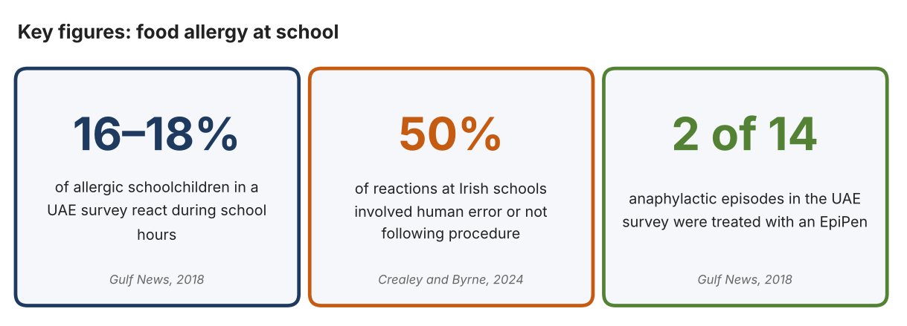
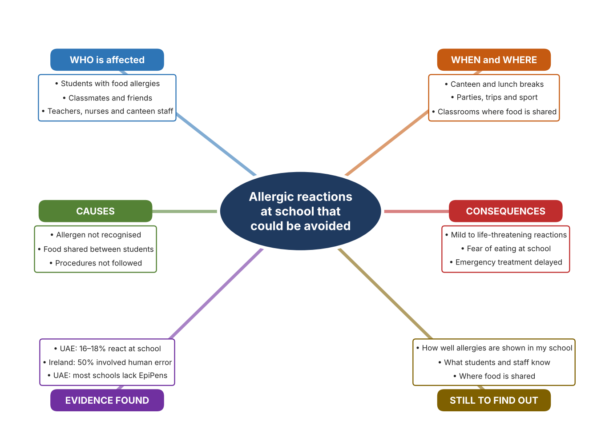
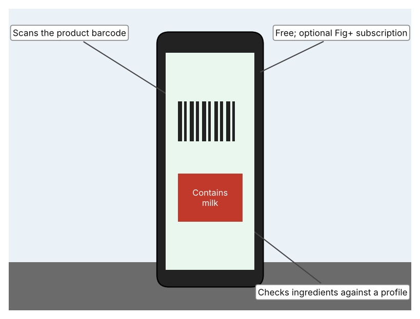
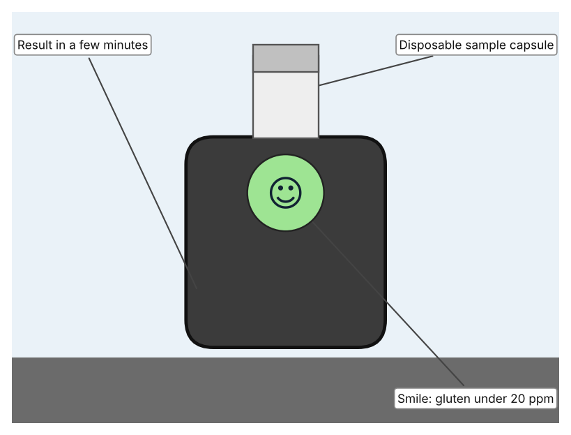
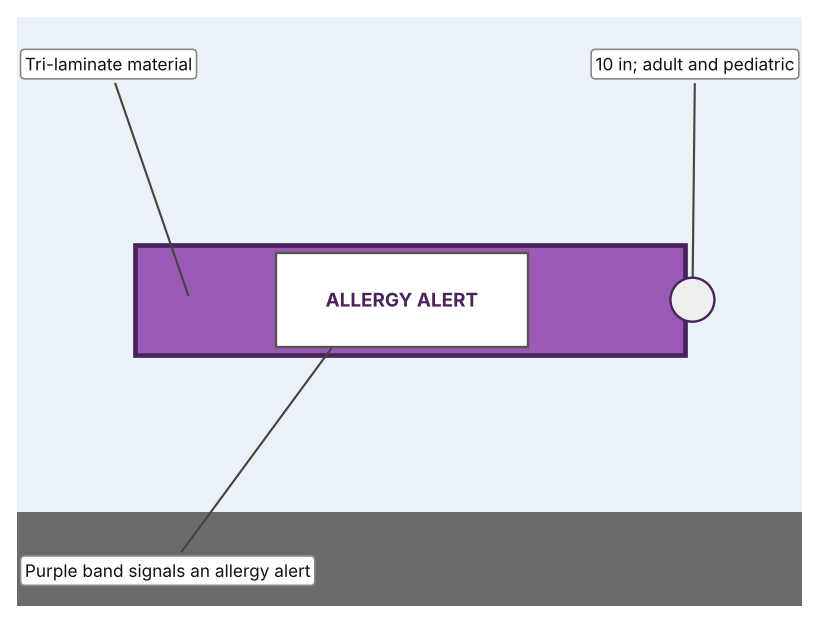

A1 · Design need
Identify and explain the problem faced by your client and community.
My client is the head of the clinic at a school in Dubai (a fictional client created for this task). The clinic looks after students with food allergies, and it knows that a small amount of the wrong food can cause a serious reaction. The head of the clinic is concerned that, in a busy school where food is shared and many adults handle it, an allergen could be eaten without anybody realising until a student becomes unwell. The client needs students with food allergies to be protected at school, and any reaction to be recognised and treated quickly.
The students with food allergies and their families are affected most, because they must trust the school every day. Classmates are affected because they often share food and may not know the risk. Teachers, canteen staff and the nurse are affected because the safety of a student depends on what they notice and do. The wider school community is affected because one serious reaction changes how everyone feels about eating together.
The need is supported by evidence. A survey by Sharjah University Hospital of 33 UAE schools found that 16–18% of allergic schoolchildren react during school hours, that most schools lacked EpiPens, and that of 14 anaphylactic episodes only two were treated with an EpiPen (Chaudhary). In a study of accidental reactions in Irish schools and preschools, 50% of reactions in schools involved human error or failure to follow procedure, and 28% involved an allergen that had not been recognised (Crealey and Byrne). The UAE survey is from 2018 and covered only part of the schools approached, so I treat it as a pattern, not as a current total.
Figure 1 summarises the key figures. In my own words, an allergic reaction is often not caused by a lack of rules but by a moment in which the information was missing, the food was shared or the label was not read. I still need to find out how this looks in my own school, and I will use an observation checklist and a short survey, without recording any student's name or medical details. Figure 2 is my mind map of the problem.
361 words


A2 · Research plan
Six research questions of different types, each with a priority, a research type and evidence.
| # | Question | Priority | Primary / secondary | Evidence | Brief answer |
|---|---|---|---|---|---|
| 1 | Factual: How often do allergic reactions happen in school, and who is affected? | High | Secondary | Chaudhary, Gulf News, 2018 (Appendix A, Source 2) | At least 8% of schoolchildren have food allergies; 16–18% of allergic children react during school hours; most surveyed schools lacked EpiPens; of 14 anaphylactic episodes, 12 were treated with antihistamines and two with an EpiPen. |
| 2 | Factual: What causes accidental allergic reactions in schools? | High | Secondary | Crealey and Byrne, 2024 (Appendix A, Source 1) | In schools, 50% of reactions involved human error or failure to follow procedure, 28% an unrecognised allergen, and about three-quarters involved food sharing; no student with anaphylaxis was given adrenaline by staff. |
| 3 | Conceptual: Why can a tiny amount of an allergen be dangerous, and how can its presence be detected or communicated? | Medium | Secondary | Appendix A, Sources 3, 4 and 5 | Ingredient information can be checked against a person's profile, a sample can be tested for a specific allergen, or people can be warned by a visible sign. Each depends on the information being available at the right moment. |
| 4 | Debatable: Should protection from allergens rely on checking the food, on identifying the person at risk, or on training people? | Medium | Secondary | Appendix A, Sources 1 to 5 | Checking food catches the hazard but only for the allergens it tests; identifying the person alerts others; training addresses human error. My view: each covers a different gap. |
| 5 | Debatable (challenges my assumption, UAE source): Food allergy is rare, so is it a big enough problem for a school to act on? | High | Secondary | Chaudhary, Gulf News, 2018 (Appendix A, Source 2) | At least 8% of schoolchildren have food allergies and 16–18% of them react at school, so a school of 1,000 students probably has dozens of allergic students. The survey is old and partial, so my own checklist must show what is in place in my school. |
| 6 | Factual (primary): How is allergy information handled in our school, and what do students and staff know about it? | High | Primary | Own allergy-information checklist and survey (Appendix A, Sources 6 and 7) | [Student data needed: write the checklist counts and survey averages (with permission), then two sentences on the pattern you see. Do not record names or medical details.] |
A3 · Existing products
Three significantly different products, each analysed with ACCESS FM, with pros and cons.
Product 1: Allergen-scanning phone app (Fig)

Illustration by the author based on “Fig: Food Scanner & Recipes,” App Store (Appendix A, Source 3). [Student: replace with a photo from the source, cited MLA 9]
Product 2: Portable allergen tester (Nima)

Illustration by the author based on Manuell, “Nima: The Portable Allergen-Detection Phenomenon” (Appendix A, Source 4). [Student: replace with a photo from the source, cited MLA 9]
Product 3: Allergy alert wristband (Medical ID Solutions 3107AA)

Illustration by the author based on the wristband listing, LAC (Appendix A, Source 5). [Student: replace with a photo from the source, cited MLA 9]
ACCESS FM analysis
| ACCESS FM | Product 1 | Product 2 | Product 3 |
|---|---|---|---|
| Aesthetics | App with a food-scanner interface; the listing does not describe the look beyond that. | Small device with a capsule on top; a smile or wheat symbol shows the result. | Purple band with a printed allergy alert. |
| Cost | Free to download; Fig+ costs about $5.99–7.49 a month or $34.99–69.99 a year. | Price is not stated in the article. | $47.25 for 250 bands, about $0.19 each. |
| Customer | Anyone with a smartphone who has an allergy or special diet. | Someone who needs to test a food for gluten; capsule must be opened by the user. | People at risk, adult or child; needs someone to fit and read it. |
| Environment | Needs a charged phone; the page does not mention connection needs. | Uses a disposable capsule for each test. | Single-use tri-laminate band; no power needed. |
| Size | Nothing extra to carry; it runs on a phone. | A portable device; the article gives no size. | A band 10 in long. |
| Safety | Rates ingredients using dietitians' information. Bystander view: only the user sees the result. | Detects gluten at 20 ppm. Bystander view: a food is only tested when someone chooses to. | Visible warning to staff and others, but it does not stop contact with the allergen. |
| Function | Scans barcodes and checks ingredients against more than 2,800 allergy and diet options. | Tests a sample for gluten in a few minutes; peanut and milk were still in development in 2016. | Marks the wearer as having an allergy so other people can notice. |
| Materials | Software; no physical materials. | Materials are not stated. | Tri-laminate, as listed. |
Pros and cons
| Product 1 | Product 2 | Product 3 | |
|---|---|---|---|
| Pro | Fast to use, free and covers many allergies and diets. | Tests the actual food, not only its label, in a few minutes. | Very cheap and makes the risk visible to everyone nearby. |
| Con | Only works for products with a barcode and can only read what the label says. | Tests for gluten only, needs a capsule for every test and the article is from 2016. | Does not prevent a reaction or say which allergen, and only works if worn. |
A4 · Design brief
Restate the need, summarise the research and the existing products, and state the design intent.
My client, the head of the clinic at a school in Dubai, needs students with food allergies to be protected at school, and any reaction to be recognised and treated quickly. A survey of 33 UAE schools found that 16–18% of allergic schoolchildren react during school hours, that most schools lacked EpiPens, and that only 2 of 14 anaphylactic episodes were treated with an EpiPen (Appendix A, Source 2). In Irish schools, 50% of reactions involved human error or failure to follow procedure (Appendix A, Source 1).
My research shows that reactions often follow a gap in information or procedure: an allergen that was not recognised, food that was shared, or a rule that was not followed (Appendix A, Source 1). My debatable questions led me to conclude that checking food, identifying the person and training people each close a different gap. My challenged assumption was that allergy is too rare to matter; the UAE survey says at least 8% of schoolchildren are allergic, so a school should expect many cases. That survey is old and partial, so I will gather my own evidence with a checklist and a survey, recording no names or medical details (Appendix A, Sources 6 and 7).
I analysed three very different existing solutions. A phone app scans barcodes and checks the ingredients against a profile, but it relies on the label and a barcode (Appendix A, Source 3). A portable tester checks a sample for gluten in a few minutes, but it tests gluten only and needs a capsule each time (Appendix A, Source 4). An allergy alert wristband is very cheap and makes the risk visible, but it does not prevent contact with an allergen (Appendix A, Source 5). They give me three ideas for inspiration: check the information, check the food itself, and make the person's risk visible to others.
My design intent is therefore to create a solution that helps to protect students with food allergies at school, by reducing the chance of exposure or by speeding up recognition and response if a reaction happens. It must be reliable, affordable, simple enough for students and staff to use in a busy school, and respectful of every student's privacy. I have deliberately not fixed what form it will take. That decision will be made in Criterion B, after I analyse my own checklist and survey against the evidence in Appendix A.
399 words
Appendix A · Research notes and sources
Secondary sources in MLA 9, with notes and where each source is used.
| # | Source (MLA 9) | Key notes | Used in |
|---|---|---|---|
| 1 | Crealey, Miranda, and Aideen Byrne. “Factors Influencing Accidental Food Allergic Reactions in Schools and Preschools.” Irish Journal of Medical Science, vol. 193, no. 1, 2024, pp. 313–19, pmc.ncbi.nlm.nih.gov/articles/PMC10808491. Accessed 21 Oct. 2026. | Irish study: about 5% of young children have food allergy; in schools, 50% of reactions involved human error or failure to follow procedure, 28% an unrecognised allergen, about three-quarters involved food sharing; no school staff gave adrenaline in the anaphylactic cases. Irish data. | A1; A2 Q2, Q3 and Q4; A4. |
| 2 | Chaudhary, Suchitra Bajpai. “UAE Schools Ill-Equipped to Deal with Food Allergy.” Gulf News, 1 Nov. 2018, gulfnews.com/amp/story/uae%2Fhealth%2Fuae-schools-ill-equipped-to-deal-with-food-allergy-1.2013481. Accessed 21 Oct. 2026. | Sharjah University Hospital survey of 33 schools (80 approached); 16–18% of allergic children react during school hours; most schools lack EpiPens; 14 anaphylactic episodes (12 antihistamines, 2 EpiPen); at least 8% of schoolchildren have food allergies. Article from 2018. | A1; A2 Q1 and Q5; A4. |
| 3 | “Fig: Food Scanner & Recipes.” App Store, Food is Good, Inc., apps.apple.com/app/id1564434726. Accessed 21 Oct. 2026. | Free to download; scans barcodes and checks ingredients against more than 2,800 allergy and diet options; Fig+ subscription from about $5.99–7.49 a month or $34.99–69.99 a year; ratings from dietitians. | A2 Q3 and Q4; A3 Product 1; A4. |
| 4 | Manuell, Roy. “Nima: The Portable Allergen-Detection Phenomenon.” New Food Magazine, 22 Sep. 2016, www.newfoodmagazine.com/?p=26982. Accessed 21 Oct. 2026. | Disposable capsule; results in a few minutes; detects gluten at 20 ppm; smile means below 20 ppm and wheat symbol means gluten detected; other allergens in development. Article from 2016. | A2 Q3 and Q4; A3 Product 2; A4. |
| 5 | “Wristband, Adult/Pediatric, 10”, Tri-Laminate, Allergy Alert, Purple, 250/Pack (3107AA).” LAC, lac.us/product/wristband-adult-pediatric-10-tri-laminate-3107aa. Accessed 21 Oct. 2026. | Purple tri-laminate allergy alert wristband; 10 inches; adult and pediatric; $47.25 for 250. | A2 Q3 and Q4; A3 Product 3; A4. |
| 6 | Primary: allergy-information checklist, completed by the student on [date]. Accessed own data. | [Student: summarise your counts.] | A2 primary question; A4. |
| 7 | Primary: survey of [number] people, completed on [date]. | [Student: summarise your averages.] | A2 primary question; A4. |
Primary research instrument 1: allergy-information checklist
Student completes the checklist with the school's permission and records no student names or medical details.
| Area | Allergy information visible (Y/N) | Ingredient labels available (Y/N) | Emergency medicine easy to find (Y/N) | Food sharing seen (Y/N) | Notes |
|---|---|---|---|---|---|
| Canteen serving area | |||||
| Classroom snack area | |||||
| Clinic or medical room | |||||
| Sports or trip area |
Primary research instrument 2: survey
Rate each statement from 1 (strongly disagree) to 5 (strongly agree). Collect responses with permission and record no names.
| Statement | 1 | 2 | 3 | 4 | 5 | Total responses |
|---|---|---|---|---|---|---|
| I know what to do if someone has an allergic reaction. | ||||||
| I check ingredients before sharing food. | ||||||
| Information about allergies is easy to find at school. | ||||||
| Emergency medicine would be easy to reach quickly. |